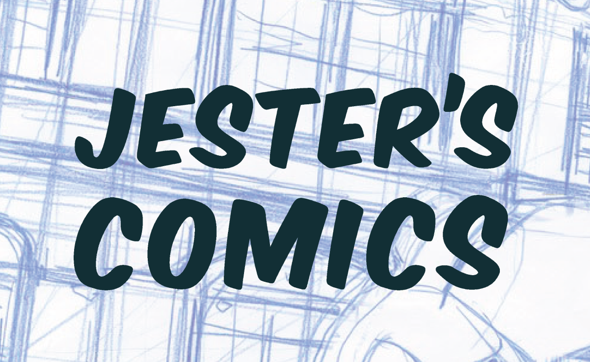

JESTER'S COMICS LANDING PAGE
Jester's playhouse is a comic shop located in southern New Jersey. Jester's caters not only to comic book fans but to a large variety of niche interests. The site was designed as a mockup that would allow a user to search their database but also to keep up to date on happenings in the world of geekery. While none of the links work the site was designed to be fluid and to adjust itself to a number of different screen sizes for both phones, tablets and desktops.